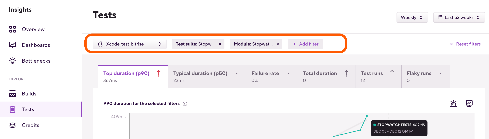

Getting started with Insights
The Insights Overview page offers both aggregated and app-level metrics to check the CI/CD health of your app. Compare values of the same point in time across charts and quickly assess whether there are any negative trends that need your immediate attention.
Insights constantly tracks the performance of all the apps of your Workspaces. You can get aggregated build data of all your apps, detailed metrics of each app, and you can even categorize the metrics as you see fit using dashboards. Insights also allows you to view bottlenecks: it shows you the Workflows and tests that take the most time or cost you the highest amount of credits.
To get to your Workspace's Insights page:
-
Log in to your Bitrise account.
-
In the top right corner, open the account selector dropdown menu and select a Workspace.
-
On the header, click Insights. This takes you to the Overview page of the selected Workspace.
The Overview page
On the Overview, you can see aggregated build data of the selected Workspace. You can see both aggregated build data and app-level build data in the form of charts that cover the selected timeframe.
You can switch between Workspaces at any time: in the top right corner, open the account selector dropdown menu and select a Workspace.
Accessing the build metrics
You can get to the detailed build metrics of your Workspace or a specific app in two ways: you can simply select Builds on the left, or you can choose a specific metric from the Overview page of the Workspace. We'll go through the second method:
-
Open the Overview page of your Workspace.
-
Find the metric you need. For example, Build failure rate.
-
Click View details.
If you have more than one app in the Workspace, on the Details page you will see the aggregated metrics for all apps of the Workspace by default.
-
From the leftmost dropdown menu, select the app you need.
-
Optionally, you can dig deeper by adding filters using the button to view specific data. You can filter for:
-
Pipelines: metrics of builds that ran with a specific Pipeline of the app.
-
Stages: metric of builds that ran with a specific Stage of a Pipeline.
-
Workflows: metrics of builds that ran with a specific Workflow of the app.
-
Branches: metrics of builds of a specific branch.
-
Machine types: metrics of builds that ran on a specific machine type.
-
Stacks: metrics of builds that ran on a specific stack.
-
-
Scroll down to see individual builds, their data, including the Steps they ran with.
For the available build metrics, check out Available metrics in Insights.
Accessing the testing metrics of an app
Insights allows you to keep track of testing metrics, right down to the level of individual testing modules. To do this, you need a testing Step that exports its results to the Deploy to Bitrise.io Step. The following Steps do this automatically, without any need for additional configuration:
-
Xcode Test for iOS
-
Android Unit Test
-
iOS Device Testing
-
Virtual Device Testing for Android
-
Flutter Test
If you use any of these Steps to run your tests, you can check your metrics in Insights:
-
Open Insights.
-
On the left, select Tests.
-
From the leftmost dropdown menu, select the app you need.
-
Optionally, you can dig deeper by using filters to view specific testing data. You can filter for:
-
Test suites
-
Test cases
-
Modules
-
Branches
 -
-
Scroll down to see the individual test cases.
For the available test metrics, check out Available metrics in Insights.
Bottlenecks
The Bottlenecks section helps you understand where you can save the most time or credits. We show you which of your Workflows and tests take the longest time and cost the highest amount of credits.
To access the Bottlenecks page, simply select Bottlenecks on the left. The bottlenecks are divided into the three basic categories we use for all metrics: Builds, Tests, and Credits. Each category has three metrics:
-
Failing Workflows/Failing tests: these are the failing Workflows or test cases that have the highest impact on the time or credits used on your builds.
-
Build time/Run time: Workflows with increasing build times, or test cases with increasing run times.
-
Usage/Flakiness: Workflows that consumed the highest amount of resources (either time or credits), or test cases with the most flaky runs.
Viewing data from a specific timeframe
By default, all Insights pages display your metrics on a weekly basis from the last 12 weeks. Modify the basis and timeframe by opening the respective dropdown menu in the top right of the page, and selecting the options you need.
The Dashboards page
You can use the Insights Dashboards page to categorize the charts of your Workspace so that you can view them in one place.
You can combine charts from the Builds, Tests, and Credits tab into a single dashboard, and you can have as many dashboards as you want.
Creating a new dashboard
You can create a new dashboard either from the Dashboards page or by clicking on the button () and clicking the button. We will focus on the former method in this guide:
-
Open Insights.
-
On the left, select .
-
Click on to open the Create dashboard window.
-
Add the name of the dashboard under the Dashboard name filed and optionally add a description under the Description field.
-
Select the default view of granularity and time range. You can also change these options later.
-
Click on .
Accessing a dashboard
To access a dashboard:
-
Open Insights.
-
On the left, select .
-
Click on the name of the dashboard or the arrow icon ("") to open a specific dashboard.
From here, you can see the charts you previously added to your dashboard. For more information, check out Adding a chart to a dashboard.
Adding a chart to a dashboard
You can add any chart from the , , and tabs to your dashboard:
-
Open Insights.
-
Select the , , or tab on the left.
-
Search for the metric you want to add to your dashboard.
-
Click on the ( ) button next to it.
-
Insert a name under the Chart name field.
-
Select the dashboard where you want to place this chart using the dropdown menu.
-
Click .
That's it! From now on you will be able to see your chart on the page.
Removing a chart from a dashboard
You can remove a chart from a dashboard using the edit mode. For more information, check out Editing a dashboard.
Editing a dashboard
Once you have created a dashboard, you can edit it as you see fit. Among other things, you can edit the default time range or delete charts you may no longer need. To do so, you must use the :
-
Open Insights.
-
On the left, select .
-
Access the dashboard you would like to edit.
-
Click on the "" icon, then click on .
-
In the edit mode, you may change the dashboard's general settings by clicking on the button. You can also change the name of previously added charts or remove them using the icons next to them.
-
Click on after you finish editing the dashboard.
Creating alerts
You can create alerts for metrics that you would like to keep an eye on to trigger when a specific threshold is reached. You can then push the alert notifications to Slack channels, email addresses, or Teams channels.
To learn more about alerts: Alerts in Insights.